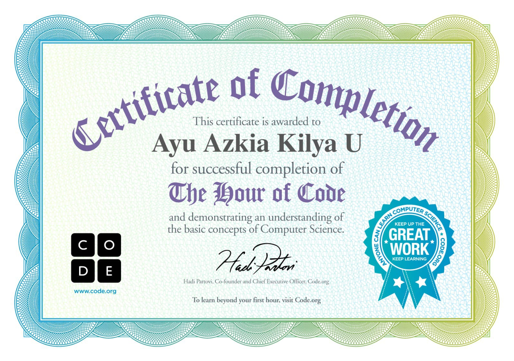

<!DOCTYPE html>
<html lang="en">
<head>
  <meta charset="UTF-8">
  <meta name="viewport" content="width=device-width, initial-scale=1.0">
  <meta http-equiv="X-UA-Compatible" content="ie=edge">
 </title></title>
    <link rel="stylesheet" href="a.css">
</head>
<body>
  
  <!-- SUMMARY -->
<details>
<summary>SPEEESIAAALLLLLL</summary>


</details>
  
  
  
<!-- ===== VIDEO BACKGROUND ===== -->
<video autoplay muted loop id="bg-video">
  <source src="background.mp4" type="video/mp4">
  Browser kamu tidak mendukung video background.
</video>


<audio controls>
  <source src="audio.mp3"></source></audio>
  
  <audio controls>
  <source src="aud.mp3" autoplay controls></source></audio>


<div class="halaman">
  <center>
    <h1>MAKALAH</h1>
    <h1>PENGETAHUAN DASAR KOMPUTER</h1>
   <marquee direction="right"></marquee>
    
    <h5><i>Disusun oleh :</i></h5>
    <h4>AYU AZKIA KHILYA UMILAL 0087605217</h4>
    <h4>YAYASAN PERSAUDARAAN HAJI AL MABRUR (YPHA)</h4>
    <h4>SMK ALMABRUR PEJAWARAN</h4>
    <h4>BANJARNEGARA</h4>
    <h4>2025</h4>
  </center>
</div>
<div class="halaman">
  <center>
    <h2>KATA PENGANTAR</h2>
    </center>
    <P>Puji syukur penulis panjatkan kehadirat Allah SWT karena berkat rahmat dan hidayah-Nya penulis telah mampu menyelesaikan makalah berjudul “Pengetahuan Dasar Komputer”. 
Makalah ini disusun untuk memenuhi satu tugas sekolah .
</P>
<P>Komputer adalah alat yang digunakan untuk membantu pekerjaan manusia, misalnya 
mulai dari mengerjakan pekerjaan kampus, sekolah, kantor dan bahkan hiburan. Dengan 
demikian, jelas bahwa untuk bekerja, komputer memerlukan instruksi dari pengguna yang 
kemudian disebut sebagai brainware. Manusia melakukan interaksi dengan computer dengan 
menggunakan setiap vitur yang ada untuk menghasilkan suatu pekerjaan.</P>
<P>Makalah ini bukanlah karya yang sempurna karena masih memiliki banyak 
kekurangan, baik dalam hal isi maupun system matika dan Teknik penulisannya. Oleh sebab 
itu, penulis sangat mengharapkan saran dan kritik yang membangun demi kesempurnaan 
makalah ini. Semoga makalah ini bisa memberikan manfaat bagi kita.</P>
<center>
  </div>
  <div class="halaman">
  <center>
    <table>
          <h2>DAFTAR ISI</h2>
  
    <tr><td>KATA PENGANTAR</td><td>i</td></tr>
    <tr><td>DAFTAR ISI</td><td>ii</td></tr>
    <tr><td><strong>BAB I PENDAHULUAN</strong></td><td>2</td></tr>
    <tr><td>A. Latar Belakang</td><td>1</td></tr>
    <tr><td>B. Rumusan Masalah</td><td>2</td></tr>
    <tr><td>C. Tujuan</td><td>2</td></tr>
    <tr><td><strong>BAB II PEMBAHASAN</strong></td><td>3</td></tr>
    <tr><td>A. Devinisi Komputer Dan Sistem Komputer </td><td>3</td></tr>
    <tr><td>B. Pengolahan Sistem Komputer </td><td>4</td></tr>
    <tr><td>C. Struktur Komputer </td><td>7</td></tr>
    <tr><td><strong>BAB III PENUTUP</strong></td><td>8</td></tr>
    <tr><td>A. Kesimpulan</td><td>8</td></tr>
    <tr><td>B.Saran</td><td>8</td></tr>
        </table>
        </center>
    </div>
<div class="halaman">
<h2>BAB I PENDAHULUAN</h2>
</center>
<h3>A.Latar Belakang</h3>
<P>Kehidupan manusia tidak lepas dari dunia teknologi. Karena pada dasarnya 
teknologi merupakan alat yang paling dibutuhkan untuk memudahkan pekerjaan 
manusia. Seiring perkembangan zaman, teknologi semakin maju dan canggih. Salah 
satunya dengan adanya komputer. Sejalan dengan zaman, berbagai perkembangan 
telah terjadi pada komputer, mulai dari packaging yang sekarang sudah portable 
hingga kinerjanya yang semakin hari semakin cepat. Kita sebagai manusia mau tidak 
mau harus mengikuti perkembangan kemajuan teknologi khususnya bidang 
komputerisasi agar kita tidak termakan oleh alat yang kita buat sendiri.
</P>
<p>Komputer adalah serangkaian perangkat mekanik dan elektronik yang tersusun 
dari berjuta-juta komponen kecil yang diintegrasikan untuk saling bekerja sama 
membentuk suatu sistem kerja yang terkontrol. Sistem ini kemudian dapat digunakan
untuk melaksanakan serangkaian pekerjaan secara otomatis, berdasar urutan instruksi 
ataupun program yang diberikan kepadanya.</p>
</div>
<div class="halaman">
<h3>B.Rumusan Masalah</h3>
<P>Berdasarkan latar belakang diatas Adapun rumusan masalah yang akan dibahas 
pada makalah ini adalah :</P>
<Ol>
  <li>Apa itu Definisi Komputer dan Siste Komputer?</li>
  <li>Apa saja yang termasuk dalam Sistem Komputer?</li>
  <li>Apa saja yang termasuk dalam klarifikasi Komputer?</li>
  <li>Apa saja yang ada dalam program aplikasi Komputer?</li>
</Ol>
</div>
<div class="halaman">
<h3>C.Tujuan</h3>
<P>
<Ol>
  <li>Definisi Komputer Dan Sistem Komputer</li>
  <li>Pengolahan Sistem Komputer</li>
  <li>Komponen Sistem Komputer</li>
  <li>Struktur Komputer</li>
</Ol>
</div>
<div class="halaman">
<center>
<h2>BAB II PEMBAHASAN</h2>
</center>
<h3>A. Definisi Komputer dan Sistem Komputer</h3>
<P>Istilah komputer (computer) diambil dari bahasa latin yaitu computare yang 
berarti menghitung. Kemudian diadaptasi pengucapannya menjadi computer 
atau dalam istilah indonesianya komputer. Komputer adalah suatu peralatan 
elektronik yang dapat menerima input, memberikan informasi, menggunakan 
suatu program yang tersimpan dimemori komputer, dapat menyimpan 
program dan hasil pengolahan, serta bekerja secara otomatis.</P>
<p>Sedangkan definisi komputer menurut ahli adalah :</p>
<ol>
  <li>Blissmer (1985), Komputer adalah suatu alat elektronik yang mampu 
melakukan beberapa tugas, yaitu menerima input, memproses input sesuai 
dengan intruksi yang diberikan, serta menyediakan output dalam bentuk 
informasi.</li>
<li>Sanders (1985), Komputer adalah sistem elektronik untuk memanipulasi 
data yang cepat dan tepat serta dirancang dan diorganisasikan supaya 
secara otomatis menerima dan menyimpan data inpuy, memprosesnya dan 
menghasilkan output berdasarkan inttuksi-intruksi yang telah tersimpan 
didalam memori.</li>
<li>Hamacher, Komputer adalah mesin penghitung elektronik yang cepat dan 
dapat menerima informasi input digital, kemudian memprosesnya sesuai 
dengan program yang tersimpan dimemori nya, dan menghasilkan output 
berupa informasi.</li>
</ol>
</div>
<div class="halaman">
<h3>B. Pengolahan Sistem Komputer</h3>
<p>Untuk mewujudkan komsepsi komputer berbagai pengolahan data guna 
menghasilkan suatu informasi, maka diperlukan sistem komputer yang 
elemennya terdiri dari hardware, software dan brainware. Ketiga elemen 
sistem komputer tersebut harus saling berhubungan dan membentuk kesatuan.</p>
<ol>
  <li>Hardware (Perangkat keras), merupakan rangkaian elektronika. Perangkat 
keras computer secara garis besar terdiri atas tiga komponen utama 
(CPU/Procesor, memory, dan input-input device).</li>
<ul>
  <li>Processor merupakan bagian dari perangkat keras komputer yang 
melakukan pemrosesan aritmatika dan logika serta pengendalian operasi 
komputer secara keseluruhan.</li>
<li>Memory berdasarkan fungsinya dibagi menjadi dua yaitu : Memori primer 
dan memori skunder.</li>
<li>Input-Output Device, merupakan bagian yang berfungsi sebagai 
penghubung antara computer dan lingkungan diluarnya. Dapat dibagi 
menjadi 2 kelompok yaitu : Input device dan output.</li>
</ul>
<li>Software (Perangkat lunak), merupaka program yang dijalankan pada 
komputer. Perangkat lunak dapat diklarifikasikan sebagai berikut :</li>
<ol>
  <li>Sistem operasi</li>
  <li>Program utilitas</li>
  <li>Program aplikasi</li>
  <li>Program paket</li>
  <li>Bahasa pemrograman</li>
</ol>
<li>Brainware (SDM), manusia yang mengoperasikan dan mengendalikan sistem 
komputer. Terdapat berbagai peran yang dapat dilakukan manusia dalam bagai 
sistem komputer. Beberapa peran diantaranya adalah :</li>
<ul>
  <li>Analis sistem, berperan melakukan analisis terhadap permasalahan yang 
dihadapi, serta merancang solusi pemecahnya dalam bentuk program 
komputer.</li>
<li>Programmer, berperan menerjemahkan rancangan yang dibuat analis 
kedalam bahasa pemrograman sehingga solusi dapat dijalankan oleh 
computer.</li>
<li>Operator, bertugas menjalankan komputer berdasarkan intruksi yang 
diberikan.</li>
<li>Teknisi, berfungsi merakit atau memelihara perangkat keras komputer.</li>
<p>Data pada komputer diolah dan disimpan dalam bentuk digital atau 
bilangan binner. Digital hanya mengenal 2 nilai saja, yaitu 0 (salah) dan 1 
(benar). Setiap 0 atau 1, disebut dengan istilah bit (binary digit). Bilangan 
yang terdiri atas 8 nilai (misalnya 10001001) disebut bilangan byte.</p>
<p>Dalam dunia digital, ada 2 jenis baris satuan : devinsi baris 2 dan baris 
10. Pada basis 10, 1 kilo berarti 1000 sedangkan baris 2 berarti 2 (pangkat) 
10 =1024.</p>
<p>Devinisi baris 2 banyak digunakan oleh industri software, sedangkan 
devinisi baris 10 banyak digunakan oleh industri hadware komputer. 
Misalnya anda membeli HD 6,4GB. Kapasitas hardisk tersebut hanya bisa 
menyimpan data sebesar 6GB.</p>
<p>Pada saat diproses, nilai digit dapat diketahui oleh komputer dari 
tegangan listriknya. Tegangan rendah bernilai 0 (off) sedangkan tegangan lebih 
tinggi bernilai 1 (onn) semakin besar ukuran data, semakin lama juga waktu 
yang diperlukan untuk mengolah dan mengirimkannya antar komputer (dalam 
jaringan).</p>
<p>Data digital ternyata sangat andal dan efisien dalam pengolahan data. 
Tak heran jika banyak informasi yang saat ini diubah dari fotmat analog 
(banyak nilai ) menjadi digital (2 nilai ) misalnya video ( VCD,DVD ) dan suara 
(CD audio). Sebelum diolah, data analog terlebih dahulu harus dikodekan 
kedalam bentuk data digital (digitize) .</p>
</ol>
</div>
<div class="halaman">
<h3>C. Komponen komputer</h3>
  <p>Komputer terdiri atas banyak bagian yang masing-masing mempunyai 
fungsinya sendiri. Kebanyakan orang memisahkan komponen komputer menjadi 
2 bagian:</p>
<ul>
  <li>komponen dalam itu sendiri (pemroses), contoh: CPU,RAM Modherboaret 
(chip ROM,chipetes, portes,buses dan slot ekspansi) Drives: Hardisk, floppy 
drive , CD drive, DVD drive kartu ekspansi ( exspansion cardes) : Graphics 
cards, network card, SCSI controller. Sond card, TV tuner card, Modem 
internal, dll</li>
<li>komponen yang tidak terhubung langsung dengan pemrosesan atau dikenal 
dengan perangkat tambahan ( peripheral). Contoh: keybord dan mouse, joystick, 
monitor, printer, scanner, speker, drives eksternal modem eksternal, UPS, 
voltage regulator, dll</li>
</ul>
</div>
<div class="halaman">
<center>
<h2>BAB III PENUTUP</h2>
</center>
<h3>A.Kesimpulan</h3>
<p>Sistem komputer adalah elmen-elemen yang terkait untuk menjalankan suatu 
aktifitas dengan menggunakan komputer. Elemen dari sistem komputer terdiri dari 
manusianya (brainware). Komponen-komponen dalam sistem komputer terbagi 3, 
yang tidak bisa terpisahkan yaitu hadware, software, dan brainware.</p>
<p>Adanya beberapa hadware ini dapat menyebabkan masalah sinkronisasi. 
Karena itu dalam operasi sistem komputer untuk mencegah sebuah memory controller, 
ditambahkan untuk sinkronisasi akses memori. Untuk meningkatkan peforma, 
digunakan beberapa bus. Tiap bus merupakan jalur data antara beberapa device yang 
berada. Jiika komputer dinyalakan bootstrap program utama akan memeriksa hadware￾hadware utama.</p>
</div>
<div class="halaman">
<h3>B.Saran</h3>
<p>Pada dasarnya komputer adalah alat teknologi yang sangat canggih. Bisa 
digunakan untuk memudahkan pekerjaan manusia. Tetapi, disamping itu terdapat banyak 
sisi positif dan negatifnya. Misalnya penggunaan internet secara bebeas tanpa selektif. 
Banyak para pengguna yang tidak bertanggung jawab menggunakan situs untuk hal-hal 
yang melanggar norma seperti pornografi, pelacuran,transaksi narkoba dan sebagainya.</p>
<p>Saran saya adalah kita harus memanfaaatkan teknologi computer dengan 
sebaik-baiknya secara selektif yang terdapat sisi positifnya sehingga dapat membantu dan 
menambah ilmu pengetahuan bagi kita semua.</p>
</div>

<div class="social-buttons">
         <a href="https://www.instagram.com/yoourrkiaaaa_0"class="social-button">
             
         </a>
         <a href="https:www.tiktok.com/@kiaa79737" class="social-button">
             
<marquee bgcolor="salmon"behavior="scrol" direction="left"> Trimakasih Atas Perhatianya,Sekian Trima Gaji:)</marquee>
 
</body>
</html>